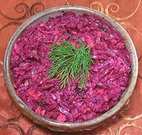

|
Beet SaladRussia - Svekol'nyi Salat | ||||
| Makes: Effort: Sched: DoAhead: |
1 # ** 2 hrs Best |
A popular, salad in Russia. Some use Mayonnaise, some use Sour Cream, some use half of each. Walnuts and prunes suggest Russians learned this from Georgia. | |||
|
1 3 1/3 1/3 3 1/2 |
# cl c c T t |
Beets Garlic Walnut meats Prunes, moist Sour Cream (1) Salt |
Make - (1 hr (30 min work) + chill time)
|